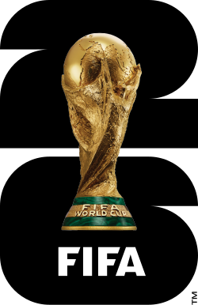
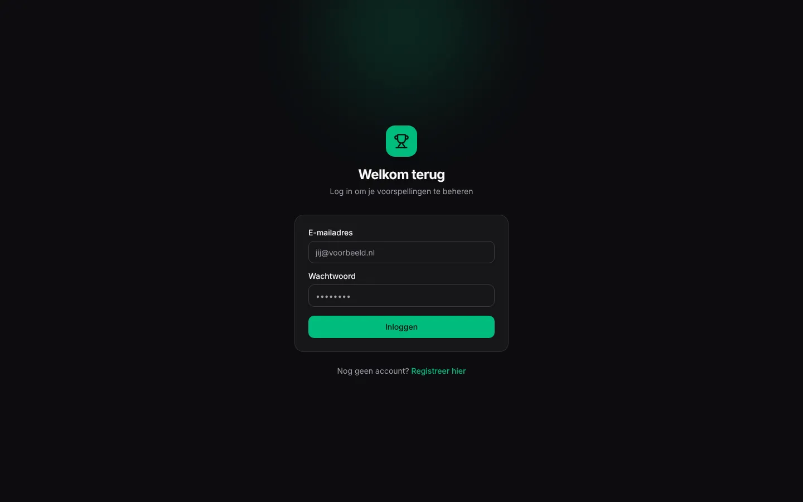
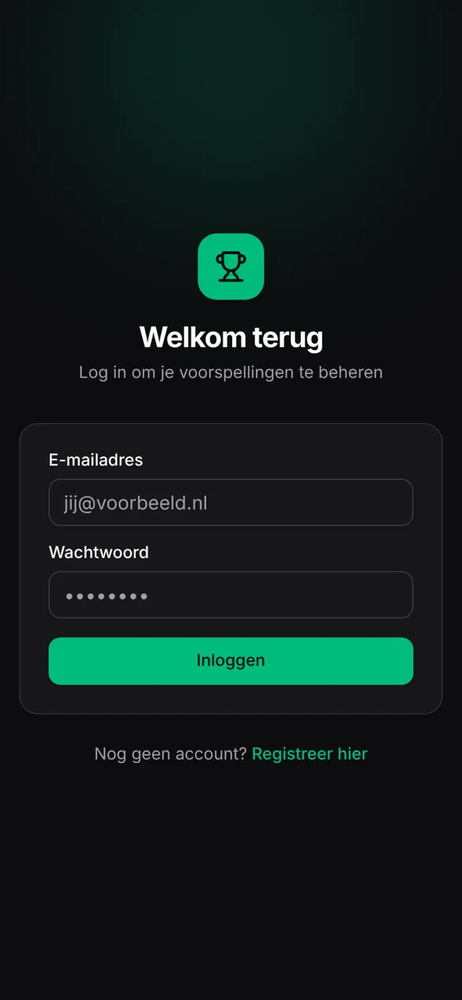

VOORSPELLINGEN · WEB-APP
World Cup 2026
Mobiel-first WK-voorspel-app waarin familie en vrienden in poules wedstrijden voorspellen en punten verdienen.
Bekijk de website

Wat de app doet
- Registreren, inloggen en profiel met eigen avatar.
- Poules aanmaken en deelnemen met een invite-code.
- Uitslagen voorspellen, automatisch vergrendeld bij aftrap.
- Knock-outschema en bonusvragen, met instelbare puntentelling per poule.
- Realtime ranglijst die meebeweegt met nieuwe uitslagen.
- Beheerpaneel met automatische synchronisatie van wedstrijddata.
Techniek
ReactTypeScriptViteTanStack RouterTanStack QueryConvexTailwind CSSshadcn/uiZod
© 2026 Serhatcan Yildirim · serhatcanyildirim.nl